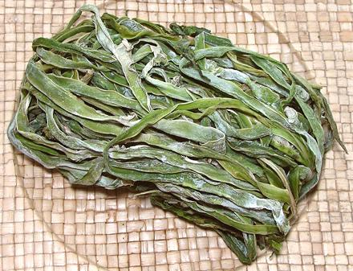
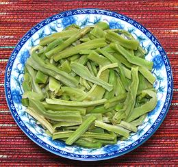

Tribute Vegetable

[Gong Cai, Gongcai; Mountain Jellyfish, Sound Vegetable; L. sativa
var asparagina alt var augustana, var angustata]
This is Stem Lettuce, shaved
and dried. It is called "Mountain Jellyfish" because it is crunchy,
like jellyfish, when rehydrated. "Sound Vegetable" comes from the
same crunchiness. "Tribute Vegetable" is because someone once served
some to a Chinese emperor. The emperor liked it and demanded it as
tribute. It is much liked in stir fries, once rehydrated.s
The photo specimen was purchased from a large Asian market in
Los Angeles (Alhambra) for 2016 U.S. $0.50 per 6 ounce package (on
sale - expect higher). Ingred: Tribute Vegetable, Salt, Sulfur
Dioxide, FD&C Blue-1 and Yellow-5.
More on Lettuce & Chicory

The photo to the left shows Tribute Vegetable rehydrated, trimmed and
cut, ready for recipes. Rehydrated and trimmed (the leaves are generally
discarded) the weight will be about 2.8 times the dry weight.
Buying:
This dried vegetable has started becoming more
available in the Asian markets here in Los Angeles, packaged in 6 ounce
bags. Some Chinatowns have dry markets where this vegetable can be
found tied into bundles and unpackaged.
Storing:
Dried in a sealed plastic pouch, it should
last up to a year. Once rehydrated it can be refrigerated for up to
a week.
Prep:
Submerge in cool water. Soak a couple of hours,
changing the water if it looks discolored. Trim away leaves (usually
done for appearance) and cut into lengths appropriate to your recipe,
usually 1-1/2 to 2 inches.
Cooking:
The rehydrated vegetable is often served
without cooking as a dressed salad. It is also often used in stir fries.
dy_lettribz 160823 - www.clovegarden.com
©Andrew Grygus - agryg@clovegarden.com - Photos
on this page not otherwise credited © cg1
- Linking to and non-commercial use of this page permitted